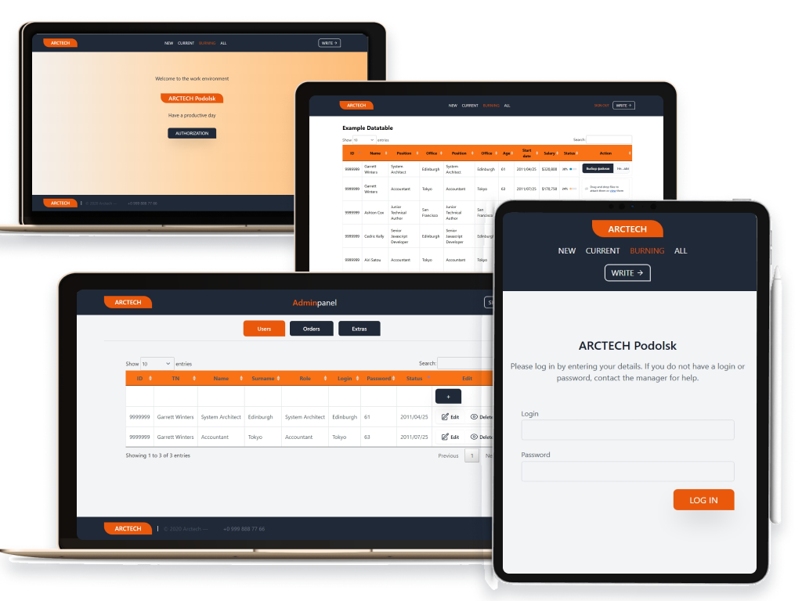
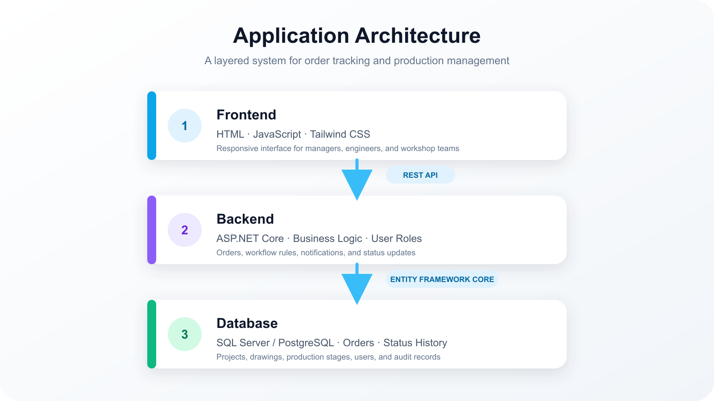
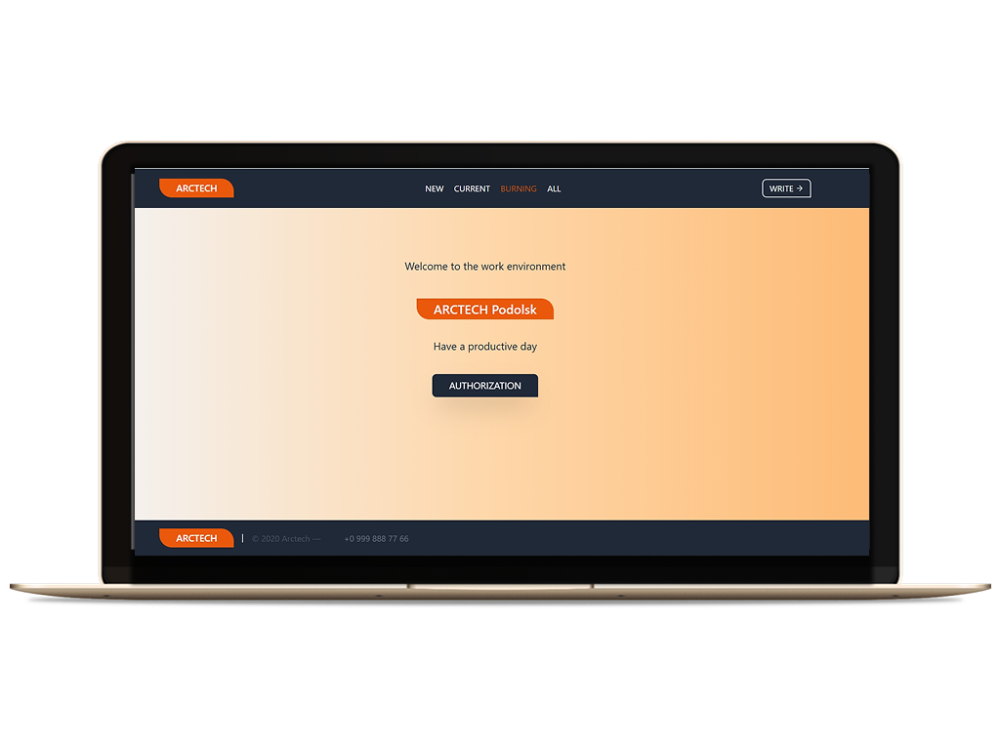

HTML · Tailwind CSS · JavaScript
ARCTECH — Order & Production Management
An interface for tracking orders and production stages.

Brief
A web application concept for managing custom orders and production workflows. The system connects managers, engineers, and workshop employees in one transparent process: order creation, engineering, production, and completion. Its main purpose is to keep every order status visible and ensure that tasks move through each production stage without losing important information.

Design & Interface
The interface was designed directly during frontend development rather than prepared as a separate Figma prototype. The focus was placed on a clear dashboard structure, readable order tables, status indicators, and simple navigation between the main sections. Visual hierarchy, colour-coded statuses, responsive layouts, and accessible controls help users quickly understand the current stage of each order.

Frontend Development
The frontend was built with HTML, JavaScript, and Tailwind CSS. Tailwind made it possible to create a consistent responsive interface quickly, including tables, forms, navigation panels, cards, modal windows, and status badges. The layout is adapted for desktop and tablet screens, while JavaScript provides interactive elements such as menus, order filters, and status updates.

Proposed Application Architecture
The application follows a layered architecture. The presentation layer provides interfaces for managers, engineers, and workshop staff. The backend layer is responsible for order processing, user roles, workflow logic, and notifications through a REST API. The data layer stores orders, technical projects, drawings, production stages, users, and status history. The architecture can be implemented with ASP.NET Core and Entity Framework Core using SQL Server or PostgreSQL.

Final Result
The result is a structured order-tracking interface that supports the full workflow: a manager creates an order, an engineer prepares the technical project, and the workshop records production progress. Users can follow current statuses, identify delays, and receive a clearer view of every stage from request to completed part.